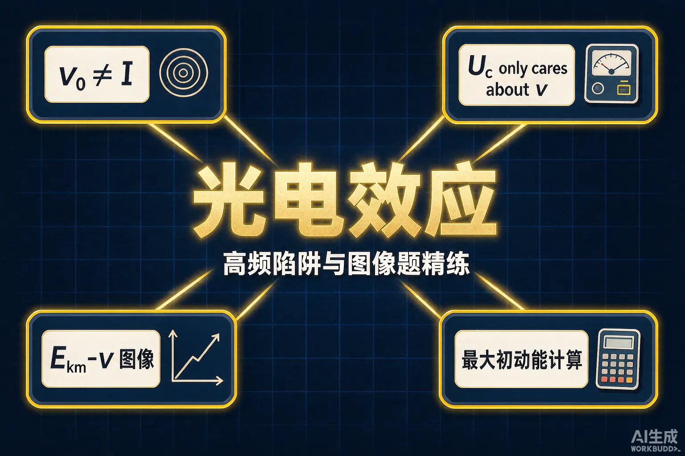
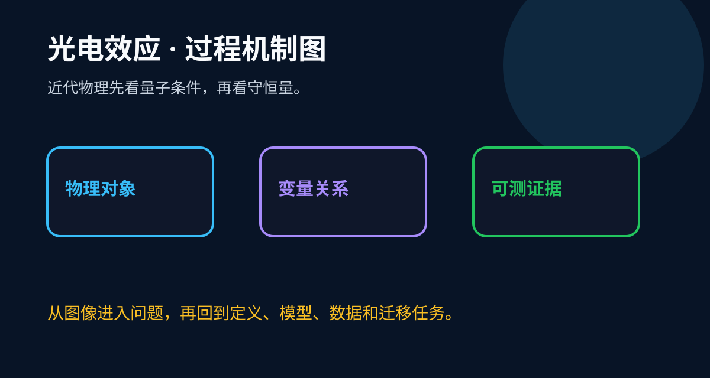
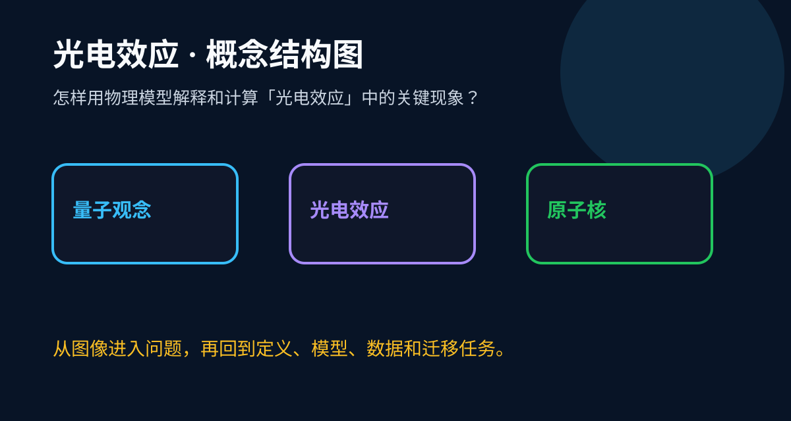

Gallery 高中物理 · 高二
把「截止频率、遏止电压、Ekm–ν 图像」三件事一次性理清，光电效应大题就是送分题

为什么还要再学一遍光电效应？你已经会背 Ekm = hν − W₀，但考试里丢分最多的恰恰是这一章——因为出题人专挑「光强」「频率」「遏止电压」三个词做文字游戏。但只要把「谁决定什么」的对应关系钉死，再把图像题的三个要素读熟，所以这一章反而最容易变成稳拿的送分题。这节课就干这两件事。
1. 你能不看书写出爱因斯坦光电效应方程吗？
2. 「光强增大，光电流一定增大」——你确定这句话无条件成立吗？
前测不计分。哪条犹豫了，这节课就重点听哪段。
拆开看：光强大 = 单位时间打到金属表面的光子数量多；能不能打出光电子，只取决于单个光子的能量 hν 是否超过 W₀。频率低于截止频率时，光强再大也一个电子都打不出来——这就是为什么手术室里用再亮的红光也杀不死细菌，而一束微弱的紫外线可以。
正确表述：在高于截止频率的前提下，饱和光电流才与光强成正比。
考试里这类陷阱常穿三件马甲：「增大光强可以减小截止频率」（错，截止频率只看 W₀）、「光强越大光电子的最大初动能越大」（错，最大初动能与光强无关）、「只要时间够长总能打出电子」（错，量子化交付没有攒能量一说）。识别方法只有一句话：先分清这个结论说的是「有没有」还是「有多少」——有没有看频率，有多少才看光强。

遏止电压 U₀ 满足 eU₀ = Ekm，而 Ekm = hν − W₀ 只由频率和逸出功决定。光强改变的是光电子的数量（饱和电流），不是最快电子的能量。同理：改成强度更高的同频光源，Ekm–ν 图像上的点纹丝不动。

拖动滑块切换金属（改变逸出功 W₀），观察直线怎么平移：斜率 h 永远不变，横截距（截止频率）和纵截距（−W₀）跟着变。
题：金属钙的逸出功 W₀ = 4.32×10⁻¹⁹ J。用频率 ν = 7.5×10¹⁴ Hz 的光照射，能否发生光电效应？若能，求光电子最大初动能与遏止电压。（h = 6.63×10⁻³⁴ J·s，e = 1.6×10⁻¹⁹ C）
① 方程：Ekm = hν − W₀ = 6.63×10⁻³⁴ × 7.5×10¹⁴ − 4.32×10⁻¹⁹
= 4.97×10⁻¹⁹ − 4.32×10⁻¹⁹ = 6.5×10⁻²⁰ J
② 判断：Ekm > 0，能发生光电效应
③ 遏止电压：U₀ = Ekm / e = 6.5×10⁻²⁰ / 1.6×10⁻¹⁹ ≈ 0.41 V
三步模板：写方程 → 判正负 → 换算电压。中间任何一步出现负值，直接答「不能发生」。
先独立作答，再点选项看对错与错因。
用同一频率的光照射两种不同金属，均发生光电效应。下列说法正确的是
频率略高于截止频率的弱光与频率相同的光强很强的光相比，下列一定相同的是
Ekm–ν 图像中，若换用逸出功更大的金属，图线的变化是
某金属截止频率为 ν₀，入射光频率为 ν（ν > ν₀），则光电子最大初动能 Ekm = ______（用 h、ν、ν₀ 表示）。
答案：h(ν − ν₀)
W₀ = hν₀，代入 Ekm = hν − W₀ 即得。
钙的遏止电压为 0.41 V，对应的最大初动能 Ekm = ______×10⁻²⁰ J。（e = 1.6×10⁻¹⁹ C）
答案：6.56
Ekm = eU₀ = 1.6×10⁻¹⁹ × 0.41 ≈ 6.56×10⁻²⁰ J。
Level 1 ⭐（识别）：说出「光强决定什么、频率决定什么」各两件事。
Level 2 ⭐⭐（应用）：给一张 Ekm–ν 图，读出 h、ν₀、W₀ 并判断另一种金属的图线怎么画。
Level 3 ⭐⭐⭐（迁移）：给同桌出一道「遏止电压 + 逸出功」的计算题，并用三步模板讲评。
一个方程：Ekm = hν − W₀（爱因斯坦光电效应方程）。
两句话：打不打得出电子看频率；打得出多少、多快，光强只管数量不管速度。
三个图像要素：斜率 = h；横截距 = ν₀；纵截距 = −W₀。换金属 = 平移，斜率不动。
记忆锚点（一句话口诀）：「有没有，问频率；有多少，看光强；跑多快，用方程。」想象光子是一份一份的快递：单份金额不够（频率低于截止频率），寄一万件也开不了箱；金额够了，件数再多改变的是包裹总数（光电流），不是每一件里的现金（Ekm）。
易错点速查：①「光强越大 → 截止频率变小」✗（截止频率只看 W₀）；②「光强越大 → Ekm 变大」✗（Ekm 与光强无关）；③「遏止电压随光强增大」✗（U₀ 只看 Ekm）；④「时间够长就能打出电子」✗（量子化交付，不攒能量）。
🤔 为什么经典波动理论解释不了？波动说认为能量均匀铺在波面上，电子「攒够」能量总要时间，且任何频率的光只要够亮都应该打出电子。实验却是：再暗的紫外光瞬间打出电子，再亮的红光颗粒无收。能量不是「攒」出来的，是「一颗一颗」量子化交付的。
🔗 联系：光量子假说是量子力学的第一块多米诺骨牌。理解了「能量按份交付」，后面玻尔模型的「能级跃迁」就顺理成章——同一套思路用在了原子身上。
「光电流」与「光电子最大初动能」是两回事。前者像人数，后者像跑得最快那人的速度；人数可以靠加光强调上来，速度却只由「光子这份钱」减去「W₀ 这笔入场费」决定。图像题里纵轴永远是 Ekm 而不是光电流，看清坐标轴再动笔，能避开一半的坑。